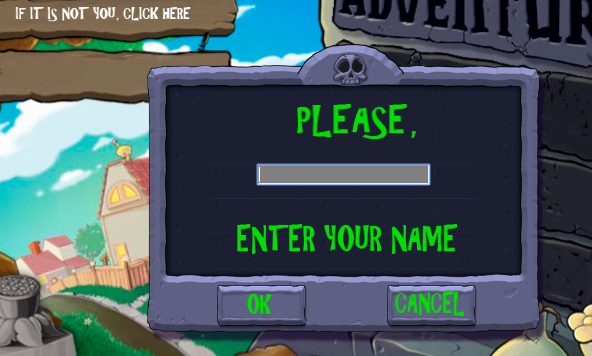
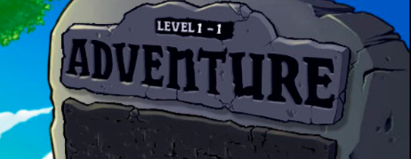
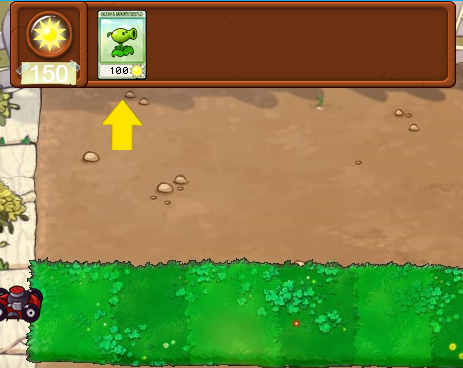
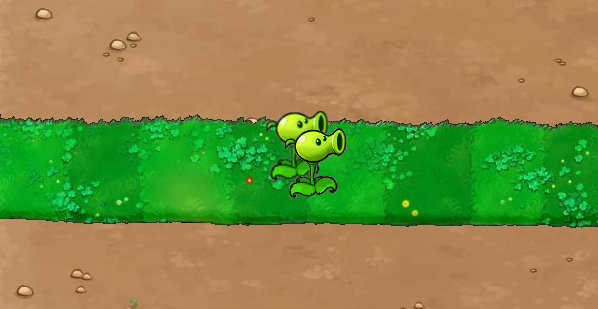
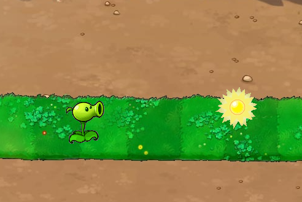
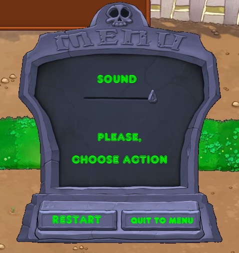
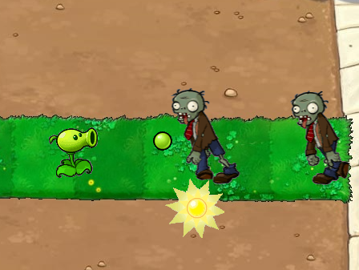
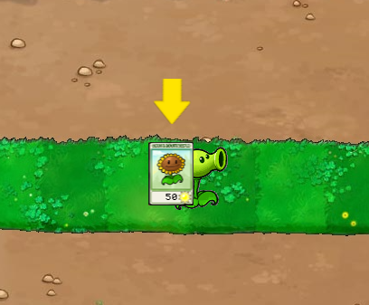

The introduction to the game "Plants vs. Zombies"
There is a lawn near your house and there are a lot of zombies on the oposite side of it. You should protect your house from zombies with the help of plants. Each plant has its special usage - a pea shoots out grains of pea and destroys zombies, a sunflower gives additional suns, a cherrybomb explodes and destroys zombies too. You should plant them and collect suns to get more seedpackets. The game has three levels. Each level is different from others by the number of lawn rows, species of plants and zombies.
The rules of the game are very simple
- 1. You need to enter your name. It allows to store your game progress. 
-  2. Click and start to play.
- 3. If the seedpacket of a definite plant is highlighted, you can choose it. 
-  4. Start to plant, making your own lawn design.
- 5. Click sun and collect it.
-  6. If you want to quit, to restart or to change the volume of audio, use "MENU" button in the top-right corner.
- 8. Don't allow zombies to reach your house (it is located on the left).
-  7. Pay attention - at the end of each level you will get one good surprise (the seedpacket with a new plant) and one bad surprise (the final wave of zombies).